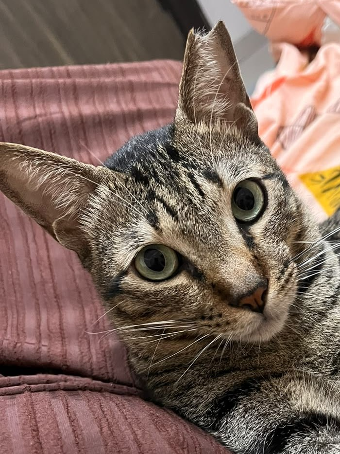

Pet him
Stroke him with the cursor and he squints. Keep going and he purrs, hearts and all.
How: Move the mouse back and forth across him.
A small pixel cat who sits in the corner of your screen, watches your cursor, and asks for dinner at nine. He’s modelled on a real one.
1 MB · macOS 13 or later
Apple Silicon and Intel · free
Most of the time, Rumi simply sits in the corner. When you want him, everything starts with the mouse.
Stroke him with the cursor and he squints. Keep going and he purrs, hearts and all.
How: Move the mouse back and forth across him.
Drag him anywhere on the screen. He dangles.
How: Click and drag.
Push him past a screen edge and he hangs on, peeking. He stays there until you pull him back.
How: Drag him past the left, right, top or bottom edge.
Double-click him, then click anywhere. He darts there.
How: Double-click, then click.
A fishing-rod wand follows your cursor — his real toy. Dangle the feathers over him and he leaps. He gets bored after a while, like a cat.
How: Right-click him → Play with Rumi. Click him to stop.
His dinner.
How: Right-click him → Feed Rumi.
A time and a message. He hops, meows once, and holds the note up until you click it.
How: Right-click him → New Reminder…
A little tag counts down beside him; click it to pause. In a pomodoro he naps through your breaks and wakes up with a stretch.
How: Right-click him → Timer or Start Pomodoro…
Every fifty minutes or so he comes to the middle of the screen, stretches, and goes back. Every hour, a drink of water.
How: On by default. Right-click → Breaks… to change the timing or switch them off.
Start a film full-screen and he slides to the edge and peeks. He comes back when it ends.
How: Nothing to do.
Between nine and ten he asks for dinner — a hop, a meow, a bowl over his head — until you feed him.
How: Right-click → Feed Rumi.
Leave the Mac for a few minutes and he curls up. Come back and he stretches.
How: Nothing to do.
His eyes follow the cursor. Left alone he blinks, flicks his tail, and ignores you.
How: Nothing to do.
Knows your name. Tell him and he’ll use it. Right-click → Tell him your name…
Meows with a reason. Only for a reminder, a timer, dinner or a break — never at random. Right-click → Sound to switch it off.
One download, one drag, and he’s there.
One file, about a megabyte.
The window shows you where.
The first time, macOS asks whether to open an app downloaded from the internet — click Open. That’s the only time it asks.
Bottom-right of your screen, and back at every login. Right-click him for everything he does.
macOS 13 Ventura or later. Works on Apple Silicon and Intel Macs. Rumi asks for no permissions and sends nothing anywhere — there is no account, no sign-in, nothing to track.
Download Rumi for Mac Send this page to your MacRumi is a real cat, and the pixel one is drawn from him: the tabby stripes, the green eyes and the collar.
His left ear is tipped — the notch on the ear that faces your right. Every frame has it. It’s how you tell him from any other pixel cat.
He is hungry at nine. He ignores most toys but leaps for the fishing-rod one, and he is quicker than anyone expects — which is why he darts rather than walks.
He was made as a gift, and he’s free. No account, no tracking, no permissions: a 1 MB download that uses about 15 MB of memory and none of your battery to speak of.
